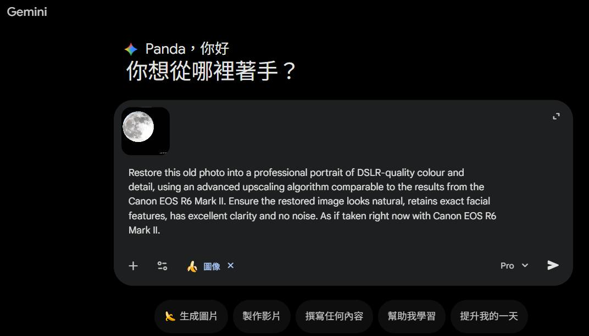

只需簡單四個步驟，讓模糊的舊照片重現極致清晰
準備一組免費的 Google 帳號即可開始使用。
使用電腦瀏覽器造訪網頁版或安裝手機端 「Google Gemini」 App。
上傳照片並勾選 「圖像」 + 「Pro」。請注意每日約有三張專業修圖額度。
複製下方適合的風格提示詞發送，也可在後方自行補充修改細節。
介面操作範例

Restore this old photo into a professional portrait of DSLR-quality colour and detail, using an advanced upscaling algorithm comparable to the results from the Canon EOS R6 Mark II. Ensure the restored image looks natural, retains exact facial features, has excellent clarity and no noise. As if taken right now with Canon EOS R6 Mark II.
Restore this old photo to match the image quality of the Canon EOS R5. Please make sure the restored photo maintains the look of the source photo; it should be realistic, with no grain or noise, as if it were taken today with a professional camera like the Canon EOS R5.
Edit this photo into a professional portrait of very high quality and colour, comparable to the results of Nikon D850. Remove grains, cracks and noise. Produce ultra-realistic image, 8K Ultra HD.
Edit this photo to make it look like it was clicked by iPhone 17. Remove grains, cracks and noise. Balance light, produce ultra-realistic image, 4K Ultra HD.
Restore this old photo to make it look like it was clicked with a Samsung Galaxy S25 Ultra. Remove grains, cracks and noise. Produce ultra-realistic images with exact facial appearance, apply realistic skin filters, 4K Ultra HD.